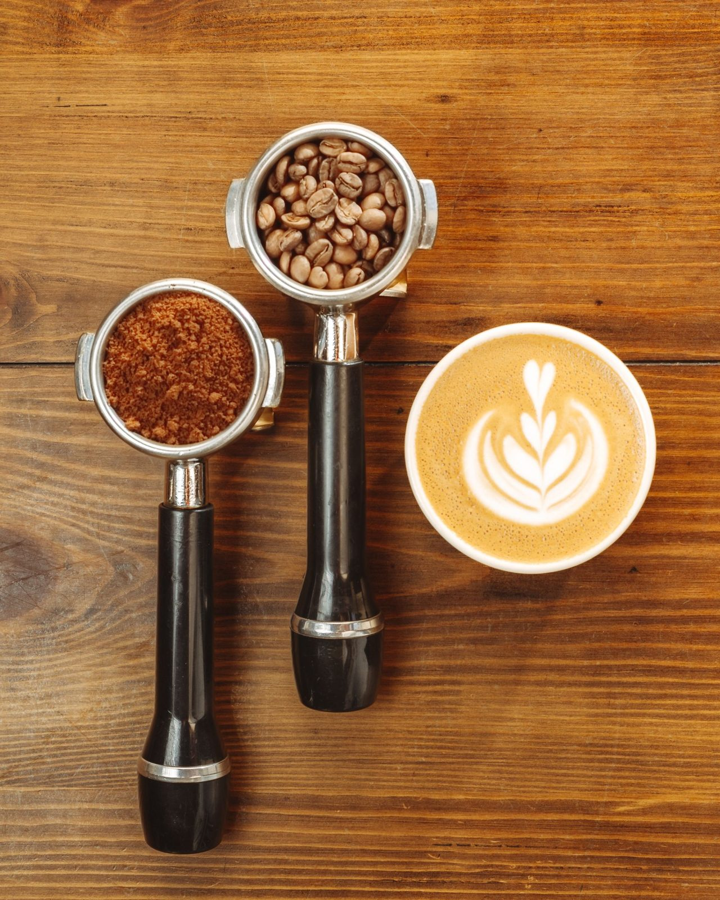

Small-batch roasts, pulled slowly, in a bar that seats twelve.
Coffee, bakes and one very good sundae. Hover a card and watch the frame open.
We roast in batches small enough to taste every one. The beans come from three farms we have visited more than once. Nothing here is rushed, including you.

Somewhere between the first drying and the first crack, sugars and amino acids start reacting. That reaction is called Maillard, and it is the reason we named the bar after it. We stop the roast the moment it tastes right, not a second later.
14 Lane No. 3, Khan Market
New Delhi 110003
Twelve stools, so we hold each one for fifteen minutes. This opens WhatsApp with your request ready to send.
Send on WhatsApp